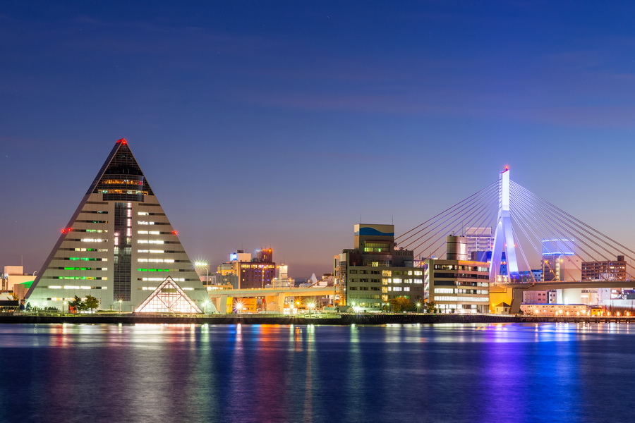

Foi a minha segunda viagem do Programa de Férias do Germinare Business. Visitei a fábrica de bovinos da JBS e a JBJ, empresa que cuida diretamente dos animais — essa conexão prática com o campo foi a parte de que mais gostei.
Mas pode me chamar de JV.
Quase todo mundo me chama de JV. A exceção é a minha família, que insiste em "Victor" (com C). Sou ambivertido, gosto de tecnologia, cabelo cacheado e de praticar esportes — e sou competitivo em praticamente tudo.

O que me move no dia a dia: esporte competitivo, tecnologia e boas histórias.
Jogo como atleta da escola. O esporte pede reflexo rápido, cabeça fria em cada saque e concentração máxima quando o jogo aperta.
Gosto de jogar bola e de sair com a galera, conversar, rir e fazer de um dia comum um momento que a gente lembra depois.
Front-end, back-end, dados e quase tudo em Java. Estou sempre aprendendo e construindo alguma coisa nova.
Curto shōnen e seinen, principalmente os que têm história densa, superação, estratégia e um estilo visual marcante.
Viagens marcantes que fiz através do Germinare Business e dos campeonatos escolares.
Foi a minha segunda viagem do Programa de Férias do Germinare Business. Visitei a fábrica de bovinos da JBS e a JBJ, empresa que cuida diretamente dos animais — essa conexão prática com o campo foi a parte de que mais gostei.

No meu último Programa de Férias da escola, passei por três cidades do interior gaúcho. Visitei a fábrica de suínos da JBS e aprendi bastante aplicando e desenvolvendo melhorias práticas através do método PDCA (Plan, Do, Check, Act).

Ano passado representei a escola no JEESP, em Praia Grande. Joguei como principal atleta da equipe e alcançamos as quartas de final. Voltamos cedo para casa, mas foi uma das viagens mais intensas e divertidas.
Os três lugares que mais quero conhecer por lá.

Arena de cúpula prateada imponente que recebe grandes competições esportivas. Junta arquitetura inovadora e o clima de esporte de quadra que eu adoro.

Cidade costeira que equilibra tranquilidade com construções futuristas como o edifício ASPAM e pontes estaiadas. Um lugar calmo onde natureza e tecnologia convivem bem.

A capital japonesa reúne estúdios de anime mundialmente famosos, bairros inteiros dedicados a eletrônicos e as principais ligas profissionais de tênis de mesa.
O Japão junta boa parte do que me fascina: tecnologia de ponta, tênis de mesa de alto nível e animes.